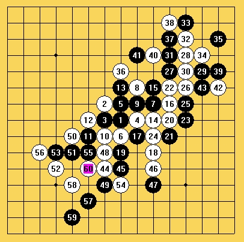
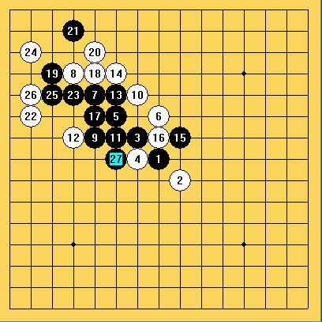
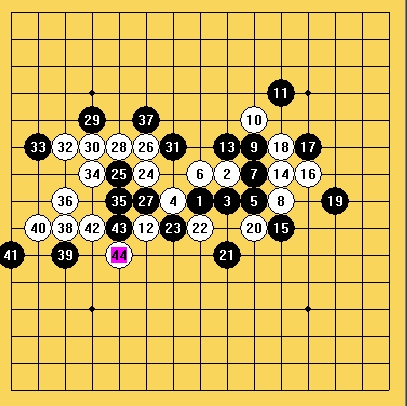

唐闸小学五子棋个人赛总决赛（第一轮进行中…）
#1 唐闸小学五子棋个人赛总决赛（第一轮进行中…） 作者：黄药师 发表时间：2007-5-23 20:11:03
五子棋个人赛总决赛将在校队的5名选手产生，他们是：六（1）班的方佳璋、顾佳炜、陈振铭五（1）班的许姝怡四（3）班的纪香。比赛采取有禁手5局3胜制，胜一场得3分，负一场0分，平局各取1分。
第一轮
许姝怡VS方佳璋
目前许姝怡暂时1比2落后
（图为第四局，许姝怡白先，由于时间暂时封棋，第二天再战）

纪香VS顾佳炜
目前纪香2：1领先
（图为第三局纪香白子E9决杀）

陈振铭第一轮轮空
#2 唐闸小学五子棋个人赛总决赛（第一轮结束） 作者：黄药师 发表时间：2007-5-24 19:55:28
第一轮纪香（黑）VS顾佳炜（白）第四盘此前比分纪香2：1领先
云月开局，本盘下了30分钟，最后纪香失误，下了一个大昏招！必胜成了必败（黑59）

第一轮纪香（白）VS顾佳炜（黑）第五盘此前比分2：2
斜月开局，白22败着，黑VCF取胜
纪香2：3负顾佳炜

－－－－－－－－－－－－－－－－－－－－－－－－－－－－－－－－
第一轮方佳璋VS许姝怡
昨天封盘的第四盘，许姝怡胜，总比分变成2：2
第五盘 方佳璋（白）VS许姝怡（黑）云月开局
白从第24手开始进攻最后取得胜利

总比分方佳璋3：2胜许姝怡